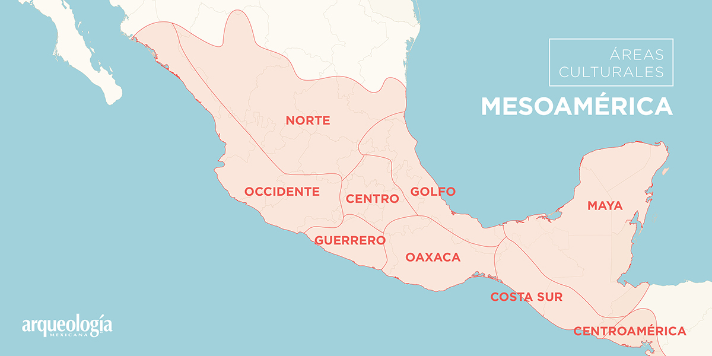
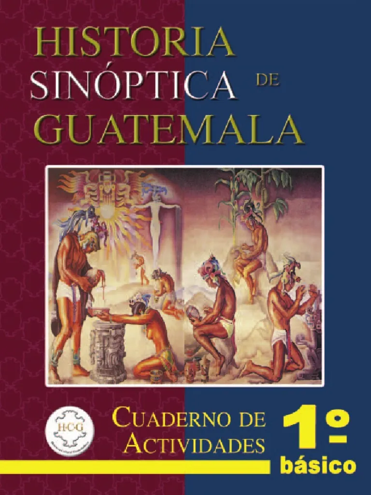

1. Análisis Escrito: Video de Mesoamérica
Mesoamérica fue un mosaico de civilizaciones avanzadas que floreció en el centro y sur de México y el norte de Centroamérica, caracterizado por una profunda unidad cultural a pesar de su diversidad étnica. Durante milenios, pueblos como los olmecas, mayas y mexicas compartieron una cosmovisión basada en la agricultura del maíz, el desarrollo de calendarios precisos, la escritura jeroglífica y la construcción de impresionantes centros ceremoniales piramidales. Su organización social era teocrática y jerarquizada, profundamente vinculada a una religión politeísta que regía desde la política hasta la vida cotidiana, creando un legado artístico y científico que se mantuvo en constante evolución hasta el choque cultural provocado por la conquista española en el siglo XVI.

Importancia: Este análisis es fundamental para comprender que Mesoamérica no fue solo un espacio geográfico, sino una unidad cultural con avances científicos y sociales complejos que sientan las bases de nuestra historia nacional.
2. Exposición: Pueblos de Mesoamérica
Presentación de las diapositivas utilizadas durante la exposición en clase.
Diapositivas
Importancia: El estudio detallado de los pueblos específicos permite valorar la diversidad étnica y lingüística de la región, reconociendo la identidad propia de cada grupo dentro del contexto mesoamericano.
3. Comentarios de Lectura: Historia Sinóptica de Guatemala
Reflexión sobre 10 citas textuales seleccionadas de los Capítulos 1 y 3.

Importancia: Analizar el libro "Historia Sinóptica de Guatemala" nos permite desarrollar un pensamiento crítico frente a las fuentes bibliográficas y entender los procesos históricos desde una perspectiva académica y rigurosa.